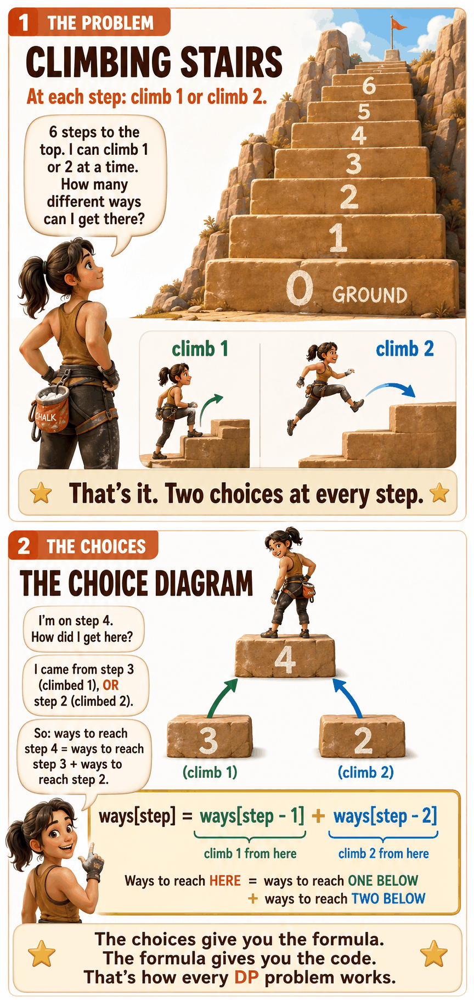

The Problem
Climbing Stairs
Step 1: What Are My Choices?
At each step: climb 1 or climb 2
remaining. How do I get here?I could have come from 1 step below (climbed 1)
I could have come from 2 steps below (climbed 2)
So: ways to reach this step = ways to reach (step - 1) + ways to reach (step - 2)
Two choices at each step. Each choice leads to a smaller problem (fewer steps remaining). That's exactly the pattern for recursion.
Step 2: Choices → Recursion
The code writes itself from the choices
def count_ways(remaining):
if remaining == 0: return 1
if remaining == 1: return 1
return count_ways(remaining - 1) + count_ways(remaining - 2)count_ways(remaining - 1) → came from 1 belowcount_ways(remaining - 2) → came from 2 below+ → add them (we want TOTAL ways, not the best)
remaining == 0 → already at the top. 1 way (do nothing).remaining == 1 → 1 step left. 1 way (climb 1).
max(grab, skip) because it wanted the BEST value. Stairs uses + because it wants the TOTAL count of ways. Different question, same structure.

Step 3: Draw the Tree, Spot the Overlap
count_ways(4) expanded
count_ways(4)
├── count_ways(3) # climb 1 from step 3
│ ├── count_ways(2) ─ ─ ─ ┐ # climb 1 from step 2
│ │ ├── count_ways(1) = 1 │
│ │ └── count_ways(0) = 1 │ SAME!
│ └── count_ways(1) = 1 │
└── count_ways(2) ─ ─ ─ ─ ─ ┘ # climb 2 from step 2
├── count_ways(1) = 1
└── count_ways(0) = 1A problem is DP when:
Step 4: Memoize (3 extra lines)
Same code, just cache the answers
def count_ways(remaining, memo={}):
if remaining in memo: return memo[remaining] # CHECK: already solved?
if remaining == 0: return 1
if remaining == 1: return 1
result = count_ways(remaining - 1, memo) + count_ways(remaining - 2, memo)
memo[remaining] = result # STORE the answer
return resultremaining solved at most once.
Step 5: From Recursion to Table

Q: Why an array? Why not a table with rows and columns?
Look at your recursive function:
def count_ways(remaining):How many parameters change across recursive calls?
1 changing variable → 1D array. That's it.
Compare: knapsack had 2 changing variables (count and bag_limit), so it needed a 2D table. Stairs has just 1, so a simple array is enough.
1 variable → 1D array. 2 variables → 2D table. 3 variables → 3D (rare). Always.
Q: What does each cell in the array mean?
ways[step] = "How many different ways can Maya reach step step?"
This is exactly what the recursion computes. The array just stores every answer.
Step 0 = the ground (starting point). Step 6 = the top. We want ways[6], the answer to the original question.
Q: Which cells can I fill immediately? (Base cases)
Look at the recursive base cases:
if remaining == 0: return 1
if remaining == 1: return 1remaining == 0 means "standing at step 0." There's 1 way to be at the ground: do nothing. So ways[0] = 1.
remaining == 1 means "standing at step 1." There's 1 way: take a single step from the ground. So ways[1] = 1.
Q: How do I fill the rest? Which direction?
The recursive formula:
count_ways(remaining) = count_ways(remaining - 1) + count_ways(remaining - 2)In table language:
ways[step] = ways[step - 1] + ways[step - 2]Each cell needs the two cells before it. So fill left to right, starting from step 2 (the first cell after the base cases).
ways[step - 1] = the cell one spot to the left (reached this step by climbing 1)ways[step - 2] = the cell two spots to the left (reached this step by climbing 2)+ = add them (total number of ways)
This is why we fill left to right: when we get to step 3, steps 1 and 2 are already filled. When we get to step 4, steps 2 and 3 are already filled. Each cell can always look back at cells that already have values.

Filling Every Cell
Base cases are filled. Now, left to right, one cell at a time.
ways[2] = ways[1] + ways[0]Look 1 left:
ways[1] = 1 (climb 1 step from step 1)Look 2 left:
ways[0] = 1 (climb 2 steps from step 0)ways[2] = 1 + 1 = 2Two ways: (1+1) or (2). Either take two single steps, or one double step.
ways[3] = ways[2] + ways[1]Look 1 left:
ways[2] = 2 (we just computed this!)Look 2 left:
ways[1] = 1ways[3] = 2 + 1 = 3Three ways: (1+1+1), (1+2), or (2+1).
ways[4] = ways[3] + ways[2]Look 1 left:
ways[3] = 3Look 2 left:
ways[2] = 2ways[4] = 3 + 2 = 5The rhythm: look back at the two cells you already filled, add them. Write the answer. Move right.
ways[5] = ways[4] + ways[3]Look 1 left:
ways[4] = 5Look 2 left:
ways[3] = 3ways[5] = 5 + 3 = 8
ways[6] = ways[5] + ways[4]Look 1 left:
ways[5] = 8Look 2 left:
ways[4] = 5ways[6] = 8 + 5 = 13There are 13 different ways for Maya to climb 6 steps.
The Complete Array
Why is the answer at the end? Because ways[6] means "how many ways to reach step 6," and 6 is the last cell. That's the original question. We filled left to right until we reached it.
The Tabulation Code
Every line maps to something we just did
def count_ways(steps_to_top):
ways = [0] * (steps_to_top + 1) # empty array, one cell per step
ways[0] = 1 # base case: 1 way to stand at ground
ways[1] = 1 # base case: 1 way to reach step 1
for step in range(2, steps_to_top + 1): # fill left to right, starting at step 2
ways[step] = ways[step - 1] + ways[step - 2] # look back 1 + look back 2
return ways[steps_to_top] # last cell = the answerways = [0] * ...ways[0] = 1remaining == 0 → return 1ways[1] = 1remaining == 1 → return 1for step in range(2, ...)ways[step - 1] + ways[step - 2]return ways[steps_to_top]The Whole Picture: Same Logic, Three Forms
Recursion → Memoization → Tabulation
def count_ways(remaining):
if remaining == 0: return 1
if remaining == 1: return 1
return count_ways(remaining - 1) + count_ways(remaining - 2)def count_ways(remaining, memo={}):
if remaining in memo: return memo[remaining]
if remaining == 0: return 1
if remaining == 1: return 1
result = count_ways(remaining - 1, memo) + count_ways(remaining - 2, memo)
memo[remaining] = result
return resultdef count_ways(steps_to_top):
ways = [0] * (steps_to_top + 1)
ways[0] = 1
ways[1] = 1
for step in range(2, steps_to_top + 1):
ways[step] = ways[step - 1] + ways[step - 2]
return ways[steps_to_top]Same answer (13 for 6 steps). Recursion is the clearest to write. Memoization makes it fast. Tabulation removes the recursion entirely.

The Bridge to Knapsack
You just learned tabulation. Knapsack is the same idea, one more dimension.
remainingTable shape: 1D array
Each cell:
ways[step]Looks at: the 2 cells to the left
Base cases: first 2 cells
Answer: last cell
count, bag_limitTable shape: 2D table (rows × columns)
Each cell:
table[row][cap]Looks at: the row above
Base cases: first row and first column
Answer: bottom-right cell
1. Count changing variables → that's your dimensions
2. Base case in recursion → fill the edges of the array/table
3. Recursive formula → cell formula (same math, reads from the table)
4. Fill in order so every cell you need is already computed
5. The answer is at the end (last cell, or bottom-right corner)
The Linear DP Family
Same pattern, small tweaks
Every problem below uses the same 1D tabulation structure. The only thing that changes is what each cell stores and which cells it looks back at.
ways[step] = ways[step - 1] + ways[step - 2]cost_to[step] = min(cost_to[step-1] + cost[step-1], cost_to[step-2] + cost[step-2])best[house] = max(best[house-1], best[house-2] + money[house])ways[i] = (ways[i-1] if valid single) + (ways[i-2] if valid pair)